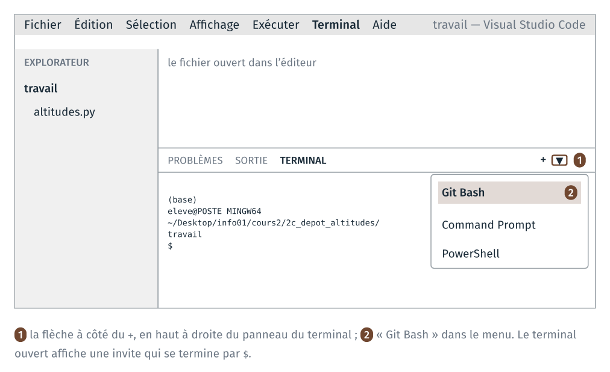
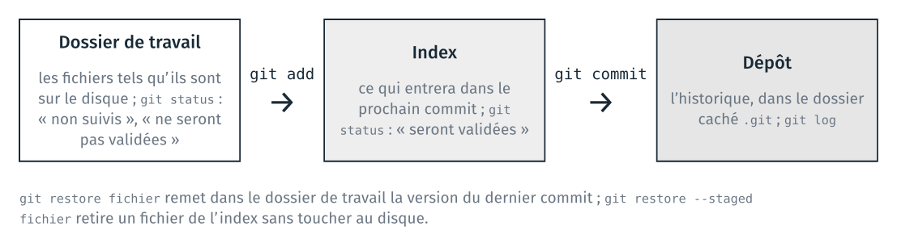
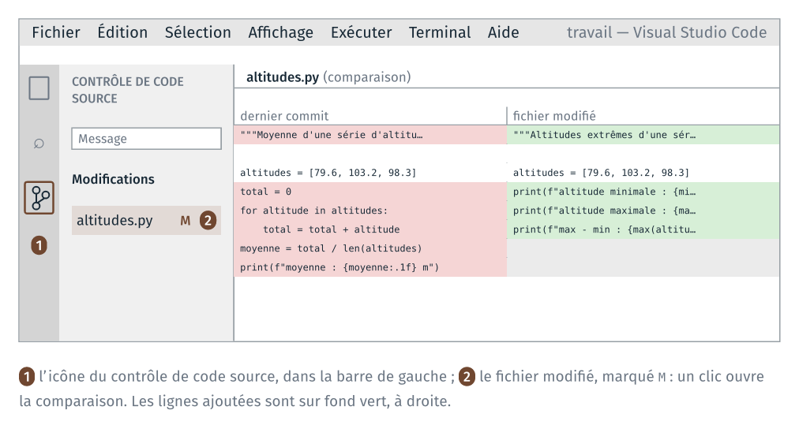
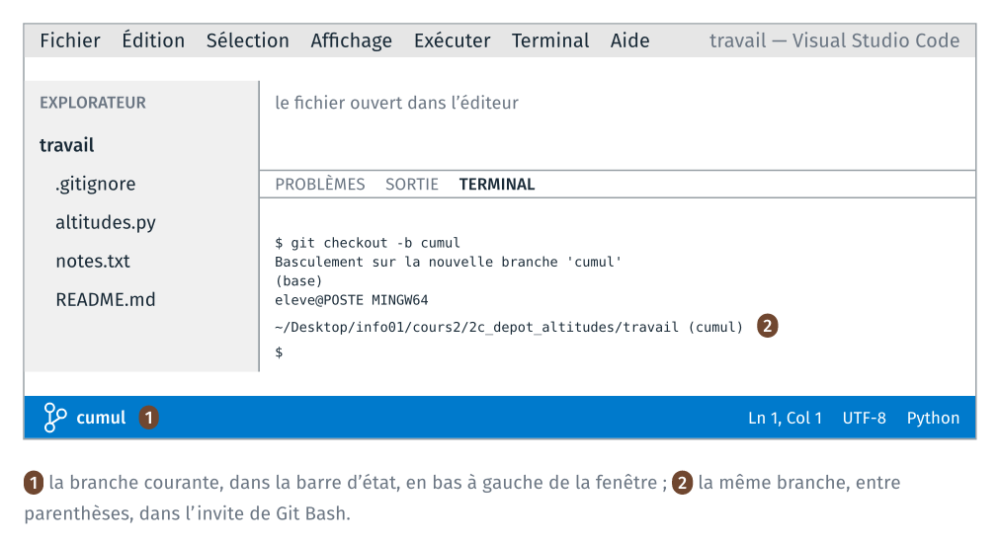
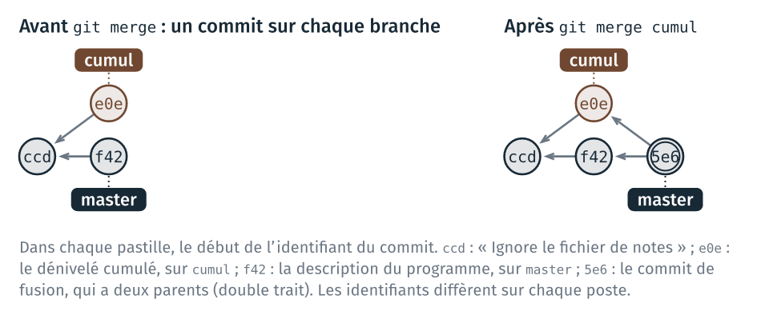
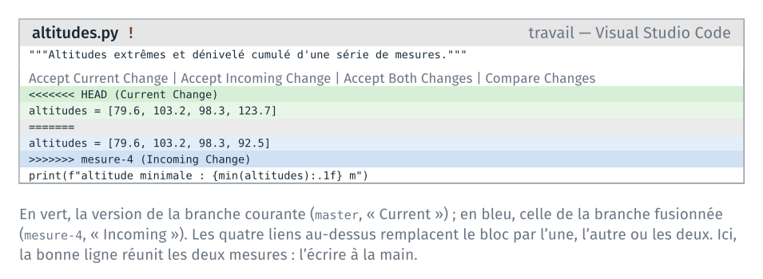

TD 2c — Un dépôt git pour altitudes.py#
Note
Les fichiers des TD de la séance sont dans l’archive info01-cours2.zip.
Ce guide détaille les étapes du TD 2c. Le TD versionne avec git altitudes.py,
le programme du cours 1 : un premier commit, des modifications comparées, un
README, un fichier de notes tenu hors du dépôt, puis une branche, une fusion et
un conflit. Au fil du TD, le programme calcule en plus les altitudes extrêmes,
leur écart et le dénivelé cumulé. Le code de ces calculs est fourni, car le TD porte sur
git. Le TD dure une quarantaine de minutes. L’étape 7 est pour ceux qui ont fini.
Le code de ce guide se copie depuis guide_2c_depot_altitudes.html, ouvert dans
un navigateur, ou depuis guide.ipynb, ouvert dans JupyterLab. Copié depuis le
PDF, il perd ses indentations.
Pour chaque étape, le guide donne :
les commandes à taper, dans l’ordre ;
ce que git affiche en retour, en français ;
comment vérifier que la commande a fonctionné, et quoi faire sinon.
Les sorties de ce guide ont été relevées avec git 2.43 en français. Sur un
poste où git est en anglais, les messages sont les mêmes, en anglais : le
guide donne entre parenthèses les phrases anglaises à reconnaître. Les
identifiants de commit (64ed213…) sont différents sur chaque poste.
Étape |
Objectif |
Action |
Commits à la fin |
|---|---|---|---|
séparer le travail des fichiers livrés |
copier le programme dans |
0 |
|
créer un dépôt et enregistrer un premier état |
créer le dépôt, faire le premier commit |
1 |
|
lire une différence, puis l’enregistrer |
modifier le programme, lire la différence, faire un commit |
2 |
|
annuler une modification non enregistrée |
abîmer une ligne, puis la restaurer |
2 |
|
décrire le projet, et ne pas versionner les notes personnelles |
écrire un README, ignorer le fichier de notes |
4 |
|
développer un calcul sur une branche, puis fusionner |
ajouter le dénivelé cumulé sur une branche, puis fusionner la branche |
7 |
|
résoudre un conflit de fusion |
modifier la même ligne sur deux branches, puis résoudre le conflit |
10 |
|
copier un dépôt, et récupérer un commit fait dans la copie |
pour aller plus loin : copier le dépôt, puis récupérer un commit de la copie |
11 |
Si le temps manque en séance, s’arrêter après l’étape 5 ; l’étape 6 se fait ensuite avec ce guide.
Rappels avant de commencer#
VS Code et son terminal. Tout le TD se fait dans VS Code : l’explorateur
à gauche, le fichier ouvert au centre, le terminal Git Bash en bas. Le
terminal s’ouvre par le menu Terminal, New Terminal. Le TD 2a a fait de
Git Bash le terminal par défaut ; si le terminal ouvert est PowerShell,
choisir « Git Bash » dans la liste ouverte par la flèche à côté du +.

L’invite de Git Bash. Elle tient sur plusieurs lignes : (base), puis
eleve@POSTE MINGW64 suivi du dossier courant, puis $. Une fois le dépôt
créé, Git Bash ajoute à la fin du dossier courant le nom de la branche,
entre parenthèses : ~/…/travail (master).
Enregistrer. Le réglage files.autoSave du TD 2a enregistre les
fichiers automatiquement, après une seconde. Sans lui, Ctrl + S après chaque
modification : git lit le fichier enregistré sur le disque.
La commande à taper en cas de doute. git status affiche la
branche courante, les fichiers qui ont changé, et les commandes qui
s’appliquent. La taper avant de demander de l’aide.
L’aide de git. Chaque commande du TD est git suivi d’une
sous-commande : init, add, commit… git add -h affiche dans le
terminal les options de add ; git add --help ouvre la page complète du
manuel dans le navigateur.
Les trois zones de git. Le schéma ci-dessous sert à toutes les étapes.
git add place un fichier dans l’index ; git commit enregistre l’index
dans le dépôt.

Un éditeur s’ouvre dans le terminal. Si une commande git ouvre un
écran avec des ~ en début de ligne, l’éditeur vim est ouvert, pour
écrire un message. Taper Échap, puis :wq et Entrée pour garder le message
proposé, ou :q! et Entrée pour abandonner. Le guide donne chaque message
par -m pour éviter cet écran.
Étape 0 · Copie du programme#
Objectif : copier
altitudes.pydanstravail/, ouvrir ce dossier dans VS Code, et lancer le programme.
Le dossier du TD est dans l’archive de la séance :
~/Desktop/info01/cours2/
├── README.md
└── 2c_depot_altitudes/
├── depart/
│ └── altitudes.py
├── travail/ vide
├── td_2c_depot_altitudes.pdf la feuille du TD
├── guide_2c_depot_altitudes.pdf ce guide, en PDF
├── guide_2c_depot_altitudes.html ce guide, en page web
├── guide.ipynb ce guide, en notebook
└── illustrations/ les images du guide
0.1 Copie du programme dans travail/#
Dans le terminal de VS Code, se placer dans le dossier du TD, puis copier le programme :
cd ~/Desktop/info01/cours2/2c_depot_altitudes
cp depart/altitudes.py travail/
Test : ls travail affiche altitudes.py.
0.2 Ouverture de travail/ dans VS Code#
Menu File, Open Folder…, puis choisir cours2\2c_depot_altitudes\travail. VS Code se
rouvre sur ce dossier ; ouvrir un terminal (menu Terminal, New Terminal).
Test : l’explorateur montre le fichier ; dans le
terminal, pwd affiche un chemin qui se termine par
2c_depot_altitudes/travail.
Le dépôt se crée dans le dossier courant du terminal. Si pwd affiche un
autre dossier, cd jusqu’à travail/ avant l’étape 1.
0.3 Lancement du programme#
python altitudes.py
Test : le programme affiche
moyenne : 93.7 m
Ce programme est celui du cours 1, déjà lancé au TD 2a.
Étape 1 · Dépôt et premier commit#
Objectif : créer un dépôt git dans
travail/, et y enregistreraltitudes.pypar un premier commit.
1.1 Création du dépôt#
git init
git affiche d’abord une dizaine de lignes qui commencent par astuce:
(hint: en anglais), sur le nom de la branche initiale : les ignorer. La
dernière ligne est :
Dépôt Git vide initialisé dans …/2c_depot_altitudes/travail/.git/
(« Initialized empty Git repository in … ».) Puis :
ls -a
.
..
altitudes.py
.git
.git est le dépôt : un dossier caché, qui contiendra l’historique. Les
fichiers du dossier n’ont pas changé.
Test : l’invite se termine maintenant par (master).
Si git init a été tapé dans un autre dossier (2c_depot_altitudes/ par
exemple), supprimer le .git créé par erreur (rm -rf .git, dans ce
dossier-là), puis revenir dans travail/ et recommencer.
1.2 Nom et adresse de l’auteur#
Chaque commit porte le nom et l’adresse de son auteur. Les postes de la
salle sont partagés : le réglage se fait dans le dépôt, sans --global, et
ne vaut que pour lui.
git config user.name "Prénom Nom"
git config user.email "prenom.nom@ensg.eu"
Remplacer par vos nom et adresse. Aucun message ne s’affiche.
Test : git config user.name affiche le nom.
1.3 État du dépôt avant le premier commit#
git status
Sur la branche master
Aucun commit
Fichiers non suivis:
(utilisez "git add <fichier>..." pour inclure dans ce qui sera validé)
altitudes.py
aucune modification ajoutée à la validation mais des fichiers non suivis sont présents (utilisez "git add" pour les suivre)
Le fichier est « non suivi » (« Untracked files ») : il est dans le dossier, mais aucun commit ne l’a encore enregistré.
1.4 Le premier commit#
git add altitudes.py
git status
Sur la branche master
Aucun commit
Modifications qui seront validées :
(utilisez "git rm --cached <fichier>..." pour désindexer)
nouveau fichier : altitudes.py
Le fichier est dans l’index (« Changes to be committed »). Le commit enregistre l’index, avec un message qui décrit ce qu’il apporte :
git commit -m "Ajoute le calcul de la moyenne"
[master (commit racine) 64ed213] Ajoute le calcul de la moyenne
1 file changed, 8 insertions(+)
create mode 100644 altitudes.py
64ed213 est le début de l’identifiant du commit ; le vôtre est différent.
Test :
git log --oneline
64ed213 Ajoute le calcul de la moyenne
Si git commit affiche « Identité d’auteur inconnue » (« Author identity
unknown »), l’étape 1.2 n’a pas été faite dans ce dépôt : la faire, puis
refaire le git commit.
Étape 2 · Modification et commit#
Objectif : remplacer dans
altitudes.pyle calcul de la moyenne par les altitudes extrêmes, afficher les modifications, puis les enregistrer par un commit.
Étape 2 · Modification du programme#
2.1 Altitudes extrêmes#
Dans altitudes.py, remplacer la première ligne par :
"""Altitudes extrêmes d'une série de mesures."""
Remplacer ensuite les lignes de total = 0 jusqu’au print par ces trois
lignes :
print(f"altitude minimale : {min(altitudes):.1f} m")
print(f"altitude maximale : {max(altitudes):.1f} m")
print(f"max - min : {max(altitudes) - min(altitudes):.1f} m")
min et max sont des fonctions de Python, qui reçoivent la liste.
Le format :.1f. Python écrit la valeur entre accolades arrondie à un
chiffre après la virgule : .1 fixe le nombre de chiffres, f demande
l’écriture décimale. Pour 2/3, Python écrit 0.7 avec :.1f, et
0.6666666666666666 sans format.
Enregistrer, puis lancer le programme :
python altitudes.py
Test : le programme affiche
altitude minimale : 79.6 m
altitude maximale : 103.2 m
max - min : 23.6 m
Étape 2 · Comparaison et commit#
2.2 État du dépôt après la modification#
git status
Sur la branche master
Modifications qui ne seront pas validées :
(utilisez "git add <fichier>..." pour mettre à jour ce qui sera validé)
(utilisez "git restore <fichier>..." pour annuler les modifications dans le répertoire de travail)
modifié : altitudes.py
aucune modification n'a été ajoutée à la validation (utilisez "git add" ou "git commit -a")
altitudes.py est modifié dans le dossier de travail, et pas encore dans
l’index (« Changes not staged for commit »). Les deux commandes proposées
entre parenthèses sont celles des étapes 2.4 et 3.
2.3 Différence avec le dernier commit#
git diff
diff --git a/altitudes.py b/altitudes.py
index 81bd4a3..6e3cc79 100644
--- a/altitudes.py
+++ b/altitudes.py
@@ -1,8 +1,6 @@
-"""Moyenne d'une série d'altitudes, à la main plutôt qu'avec sum()."""
+"""Altitudes extrêmes d'une série de mesures."""
altitudes = [79.6, 103.2, 98.3]
-total = 0
-for altitude in altitudes:
- total = total + altitude
-moyenne = total / len(altitudes)
-print(f"moyenne : {moyenne:.1f} m")
+print(f"altitude minimale : {min(altitudes):.1f} m")
+print(f"altitude maximale : {max(altitudes):.1f} m")
+print(f"max - min : {max(altitudes) - min(altitudes):.1f} m")
a/ est la version du dernier commit, b/ celle du disque. Les lignes qui
commencent par - sont les anciennes, celles qui commencent par + les nouvelles ;
les autres lignes sont le contexte. @@ -1,8 +1,6 @@ indique que le passage
commence à la ligne 1, et fait 8 lignes avant et 6 lignes après.
La même différence se lit dans VS Code : panneau Source Control, dans la barre
de gauche (Ctrl + Maj + G), puis clic sur altitudes.py.

2.4 Le commit#
git add altitudes.py
git commit -m "Remplace la moyenne par les altitudes extrêmes"
[master 726d93f] Remplace la moyenne par les altitudes extrêmes
1 file changed, 4 insertions(+), 6 deletions(-)
Une ligne modifiée compte pour une ligne retirée et une ligne ajoutée. Le calcul de la moyenne n’est plus dans le fichier ; il reste dans le premier commit.
Test :
git log --oneline
726d93f Remplace la moyenne par les altitudes extrêmes
64ed213 Ajoute le calcul de la moyenne
Le commit le plus récent est en haut. git log, sans option, donne aussi
l’identifiant complet, l’auteur et la date de chaque commit ; q quitte
l’affichage s’il ne tient pas dans le terminal.
Étape 3 · Annulation d’une modification#
Objectif : introduire une erreur dans
altitudes.py, puis revenir à la version du dernier commit.
3.1 Ligne abîmée#
Dans altitudes.py, à la ligne altitude maximale, remplacer max(altitudes) par
max(altitude), et enregistrer. Puis :
python altitudes.py
altitude minimale : 79.6 m
Traceback (most recent call last):
File "…/2c_depot_altitudes/travail/altitudes.py", line 5, in <module>
print(f"altitude maximale : {max(altitude):.1f} m")
^^^^^^^^
NameError: name 'altitude' is not defined. Did you mean: 'altitudes'?
Le programme s’arrête à cette ligne, comme les programmes fautifs du TD 2b.
git diff
diff --git a/altitudes.py b/altitudes.py
index 6e3cc79..688525d 100644
--- a/altitudes.py
+++ b/altitudes.py
@@ -2,5 +2,5 @@
altitudes = [79.6, 103.2, 98.3]
print(f"altitude minimale : {min(altitudes):.1f} m")
-print(f"altitude maximale : {max(altitudes):.1f} m")
+print(f"altitude maximale : {max(altitude):.1f} m")
print(f"max - min : {max(altitudes) - min(altitudes):.1f} m")
3.2 Restauration du fichier#
git restore altitudes.py
git status
Sur la branche master
rien à valider, la copie de travail est propre
(« nothing to commit, working tree clean ».)
Test : python altitudes.py affiche de nouveau ses trois lignes.
git restore remet le fichier dans l’état du dernier commit : la
modification est perdue, et aucune commande ne la retrouve. git ne peut
restaurer que ce qui a été enregistré par un commit.
Étape 4 · README et fichier de notes#
Objectif : décrire le programme dans un fichier
README.md, et l’enregistrer par un commit ; écrire ses notes de travail dansnotes.txt, et exclure ce fichier des commits.
Étape 4 · Ajout d’un fichier README#
4.1 Le fichier README.md#
README.md, à la racine d’un projet, décrit ce qu’il fait et comment s’en
servir. Dans VS Code : explorateur, clic droit sur un endroit vide, « New
File… », nom README.md. Y écrire ces lignes, puis enregistrer :
# Altitudes
Ce programme affiche des statistiques sur une série d'altitudes, en mètres.
## Utilisation
Écrire les altitudes dans la liste `altitudes`, puis lancer `python altitudes.py`.
La syntaxe est celle des cellules de texte du cours 1. Afficher l’aperçu du
fichier dans VS Code : Ctrl + Maj + V.
Test : l’aperçu montre deux titres et deux paragraphes.
git add README.md
git commit -m "Ajoute un README"
[master 4097d87] Ajoute un README
1 file changed, 7 insertions(+)
create mode 100644 README.md
Étape 4 · Fichier à ignorer#
4.2 Un fichier de notes#
Dans VS Code : explorateur, clic droit sur un endroit vide, « New File… »,
nom notes.txt. Y écrire la liste des tâches à venir, puis enregistrer :
À faire :
- ajouter le dénivelé cumulé
- lire les altitudes dans un fichier texte
git status
Sur la branche master
Fichiers non suivis:
(utilisez "git add <fichier>..." pour inclure dans ce qui sera validé)
notes.txt
aucune modification ajoutée à la validation mais des fichiers non suivis sont présents (utilisez "git add" pour les suivre)
notes.txt sert à la personne qui travaille, et ne fait pas partie du
programme. Au cours 6, le dépôt est partagé : les autres membres du projet
n’ont pas à recevoir ces notes.
4.3 Le fichier .gitignore#
.gitignore est un fichier texte, à la racine du dépôt. Chaque ligne est
un motif de noms de fichiers que git status n’affiche plus et que
git add n’ajoute pas. Son
nom commence par un point, sans autre extension.
Dans VS Code : explorateur, clic droit sur un endroit vide, « New File… »,
nom .gitignore. Y écrire une ligne, puis enregistrer :
notes.txt
Un motif peut contenir *, qui remplace n’importe quelle suite de caractères,
comme dans Git Bash au cours 1.
git status
Sur la branche master
Fichiers non suivis:
(utilisez "git add <fichier>..." pour inclure dans ce qui sera validé)
.gitignore
aucune modification ajoutée à la validation mais des fichiers non suivis sont présents (utilisez "git add" pour les suivre)
notes.txt n’apparaît plus. .gitignore est un
fichier du projet comme un autre : il se versionne.
4.4 Le commit de .gitignore#
git add .gitignore
git commit -m "Ignore le fichier de notes"
[master ccd2363] Ignore le fichier de notes
1 file changed, 1 insertion(+)
create mode 100644 .gitignore
Test :
git status
ls
Sur la branche master
rien à valider, la copie de travail est propre
altitudes.py
notes.txt
README.md
La fin du guide explique ces deux sorties, dans Fichier ignoré.
Étape 5 · Branche et fusion#
Objectif : créer la branche
cumulet y ajouter le dénivelé cumulé ; revenir surmasteret y compléter la description du programme ; fusionnercumuldansmaster.
Étape 5 · Énoncé : branche et fusion#
Le dénivelé cumulé est la somme des écarts d’altitude d’un point au suivant, avec un total pour les hausses et un total pour les baisses.
Chercher les commandes dans les diapositives « Les branches » et « Fusionner deux branches : git merge, git rebase ».
Faire l’étape seul, sans lire les deux sections suivantes.
Comparer avec la solution, dans Étape 5 · Solution : création d’une branche et Étape 5 · Solution : fusion de la branche.
Le pseudo-code ci-dessous décrit le calcul à ajouter à la fin de
altitudes.py, sur cumul ; la solution donne son code Python.
hausse ← 0 ; baisse ← 0
pour chaque altitude, à partir de la deuxième :
écart ← altitude − altitude précédente
si écart > 0 :
hausse ← hausse + écart
sinon :
baisse ← baisse − écart
afficher hausse et baisse
Sur master, la première ligne devient :
"""Altitudes extrêmes et dénivelé cumulé d'une série de mesures."""
Test : git log --oneline --graph montre la fusion.
Étape 5 · Solution : création d’une branche#
5.1 Création de la branche#
git branch
* master
Une seule branche, master, marquée d’une étoile : la branche courante.
git checkout -b cumul
Basculement sur la nouvelle branche 'cumul'
(« Switched to a new branch “cumul” ».)
Test : l’invite se termine par (cumul), et la barre
d’état de VS Code, en bas à gauche, affiche cumul.

5.2 Le dénivelé cumulé#
À la fin d”altitudes.py, ajouter une ligne vide, puis ces lignes :
hausse = 0
baisse = 0
for i in range(1, len(altitudes)):
ecart = altitudes[i] - altitudes[i - 1]
if ecart > 0:
hausse = hausse + ecart
else:
baisse = baisse - ecart
print(f"cumul en hausse : {hausse:.1f} m")
print(f"cumul en baisse : {baisse:.1f} m")
Enregistrer, puis lancer le programme :
python altitudes.py
Test : le programme affiche
altitude minimale : 79.6 m
altitude maximale : 103.2 m
max - min : 23.6 m
cumul en hausse : 23.6 m
cumul en baisse : 4.9 m
Sur les trois altitudes, 79.6, 103.2 et 98.3 : une hausse de 23.6 m, puis une baisse de 4.9 m.
git add altitudes.py
git commit -m "Ajoute le dénivelé cumulé"
[cumul e0e07c5] Ajoute le dénivelé cumulé
1 file changed, 11 insertions(+)
Étape 5 · Solution : fusion de la branche#
5.3 Retour sur master#
git checkout master
Basculement sur la branche 'master'
Test : dans VS Code, altitudes.py se termine de nouveau par la ligne
max - min. Puis :
python altitudes.py
altitude minimale : 79.6 m
altitude maximale : 103.2 m
max - min : 23.6 m
La fin du guide explique ce changement, dans Branches et fusion.
5.4 Un commit sur master#
Dans altitudes.py, remplacer la première ligne par la ligne suivante, puis
enregistrer :
"""Altitudes extrêmes et dénivelé cumulé d'une série de mesures."""
git add altitudes.py
git commit -m "Complète la description du programme"
git log --oneline --graph --all --decorate
* f42a619 (HEAD -> master) Complète la description du programme
| * e0e07c5 (cumul) Ajoute le dénivelé cumulé
|/
* ccd2363 Ignore le fichier de notes
* 4097d87 Ajoute un README
* 726d93f Remplace la moyenne par les altitudes extrêmes
* 64ed213 Ajoute le calcul de la moyenne
Chaque * est un commit ; les traits dessinent les deux branches, parties
du même commit ccd2363. HEAD -> master : la branche courante est
master.
5.5 Fusion#
La fusion se lance depuis la branche qui reçoit, ici master :
git merge cumul -m "Fusionne le dénivelé cumulé"
Fusion automatique de altitudes.py
Merge made by the 'ort' strategy.
altitudes.py | 11 +++++++++++
1 file changed, 11 insertions(+)
Test : python altitudes.py affiche de nouveau le cumul, et la première
ligne d”altitudes.py est la description complétée. Puis :
git log --oneline --graph
* 5e694de Fusionne le dénivelé cumulé
|\
| * e0e07c5 Ajoute le dénivelé cumulé
* | f42a619 Complète la description du programme
|/
* ccd2363 Ignore le fichier de notes
* 4097d87 Ajoute un README
* 726d93f Remplace la moyenne par les altitudes extrêmes
* 64ed213 Ajoute le calcul de la moyenne

Sans -m, git merge ouvre l’éditeur vim pour le message du commit de
fusion : Échap, puis :wq et Entrée gardent le message proposé.
La fin du guide explique cette fusion, dans Branches et fusion.
Étape 6 · Conflit de fusion#
Objectif : modifier la même ligne de
altitudes.pysurmasteret sur une nouvelle branche,mesure-4, puis fusionnermesure-4dansmasteren gardant les deux altitudes ajoutées ; dessiner ensuite le graphe du dépôt, et le comparer à celui que git affiche.
Étape 6 · Même ligne sur deux branches#
6.1 Deux modifications de la même ligne#
La troisième ligne d”altitudes.py est :
altitudes = [79.6, 103.2, 98.3]
Sur une nouvelle branche, ajouter 92.5 à la fin de la liste :
git checkout -b mesure-4
Modifier la ligne, enregistrer, puis :
git add altitudes.py
git commit -m "Ajoute la mesure 92.5"
[mesure-4 a24c0bb] Ajoute la mesure 92.5
1 file changed, 1 insertion(+), 1 deletion(-)
Sur master, ajouter 123.7 à la fin de la liste, sur la même ligne :
git checkout master
Modifier la ligne, enregistrer, puis :
git add altitudes.py
git commit -m "Ajoute la mesure 123.7"
[master 41493a5] Ajoute la mesure 123.7
1 file changed, 1 insertion(+), 1 deletion(-)
Étape 6 · Résolution du conflit#
6.2 Fusion en conflit#
git merge mesure-4
Fusion automatique de altitudes.py
CONFLIT (contenu) : Conflit de fusion dans altitudes.py
La fusion automatique a échoué ; réglez les conflits et validez le résultat.
(« CONFLICT (content): Merge conflict in altitudes.py ».) Les deux branches ont modifié la même ligne : git arrête la fusion et écrit les deux versions dans le fichier.
git status
Sur la branche master
Vous avez des chemins non fusionnés.
(réglez les conflits puis lancez "git commit")
(utilisez "git merge --abort" pour annuler la fusion)
Chemins non fusionnés :
(utilisez "git add <fichier>..." pour marquer comme résolu)
modifié des deux côtés : altitudes.py
aucune modification n'a été ajoutée à la validation (utilisez "git add" ou "git commit -a")
L’invite affiche (master|MERGING) : une fusion est en cours.
6.3 Contenu du fichier#
Le début d”altitudes.py est maintenant :
"""Altitudes extrêmes et dénivelé cumulé d'une série de mesures."""
<<<<<<< HEAD
altitudes = [79.6, 103.2, 98.3, 123.7]
=======
altitudes = [79.6, 103.2, 98.3, 92.5]
>>>>>>> mesure-4
Entre <<<<<<< HEAD et =======, la ligne de la branche courante,
master ; entre ======= et >>>>>>> mesure-4, celle de la branche
fusionnée. VS Code colore les deux versions et affiche quatre actions
au-dessus du bloc.

Lancer le programme :
python altitudes.py
File "…/2c_depot_altitudes/travail/altitudes.py", line 3
<<<<<<< HEAD
^^
SyntaxError: invalid syntax
La fin du guide explique cette erreur, dans Branches et fusion.
6.4 Résolution#
La bonne ligne garde les deux mesures : aucune des deux versions ne convient telle quelle. Remplacer les cinq lignes du bloc (marqueurs compris) par la seule ligne :
altitudes = [79.6, 103.2, 98.3, 92.5, 123.7]
Enregistrer. Vérifier qu’il ne reste aucun marqueur : Ctrl + F dans
VS Code, chercher <<<<, puis >>>> et ==== ; la recherche affiche
« No results ». Puis :
python altitudes.py
Test : le programme affiche
altitude minimale : 79.6 m
altitude maximale : 123.7 m
max - min : 44.1 m
cumul en hausse : 54.8 m
cumul en baisse : 10.7 m
6.5 Fin de la fusion#
git add altitudes.py
git status
Sur la branche master
Tous les conflits sont réglés mais la fusion n'est pas terminée.
(utilisez "git commit" pour terminer la fusion)
Modifications qui seront validées :
modifié : altitudes.py
git commit -m "Fusionne les deux mesures"
[master e0c82f8] Fusionne les deux mesures
Pour abandonner une fusion en conflit au lieu de la résoudre :
git merge --abort rend l’état d’avant le git merge.
Étape 6 · Graphe du dépôt#
6.6 Dessin du graphe#
Avant de taper la commande suivante, dessiner sur papier le graphe du dépôt : une pastille par commit, une flèche de chaque commit vers son ou ses parents, et le nom de chaque branche à côté du commit qu’elle désigne, comme sur les diapositives du cours. Puis comparer avec le dessin de git :
git log --oneline --graph --all --decorate
Le graphe attendu est à la fin du guide, dans Graphe du dépôt à la fin de l’étape 6 : le lire après avoir fait le dessin.
Test : git branch liste les trois branches :
cumul
* master
mesure-4
Étape 7 · Pour aller plus loin : une seconde copie du dépôt#
Objectif : obtenir une seconde copie du dépôt de
travail/pargit clone, y faire un commit, puis récupérer ce commit danstravail/.
Le dossier .git contient tout l’historique du projet. git clone crée
une copie complète du dépôt, dans un autre dossier ou sur un autre
support, comme une clé USB. git pull fait ensuite passer des commits d’un
dépôt à l’autre. La forge du cours 6 est un dépôt de plus, sur un serveur.
7.1 Copie du dépôt#
cd ..
git clone travail copie
Clonage dans 'copie'...
fait.
(« Cloning into “copie”… done. ») cd .. remonte dans
2c_depot_altitudes/ ; git clone y crée copie/, à côté de travail/.
Pour copier le dépôt sur une clé USB, donner en second argument un dossier
de la clé, par exemple /e/altitudes pour le lecteur E:.
cd copie
ls -a
git log --oneline -3
.
..
altitudes.py
.git
.gitignore
README.md
e0c82f8 Fusionne les deux mesures
41493a5 Ajoute la mesure 123.7
a24c0bb Ajoute la mesure 92.5
La copie a son propre dossier .git, avec les mêmes commits et les mêmes
identifiants. notes.txt, ignoré, n’a pas été copié.
7.2 Le dépôt d’origine#
git remote -v
origin …/2c_depot_altitudes/travail (fetch)
origin …/2c_depot_altitudes/travail (push)
La copie garde le chemin du dépôt dont elle vient, sous le nom origin.
Au cours 6, origin désigne le dépôt de la forge.
7.3 Un commit dans la copie#
Le réglage de l’étape 1.2 est écrit dans travail/.git, et git clone ne
le copie pas : dans la copie, git config user.name n’affiche rien. Le
refaire :
git config user.name "Prénom Nom"
git config user.email "prenom.nom@ensg.eu"
Ouvrir copie/altitudes.py dans VS Code (menu File, Open File…), ajouter 127.7 à la
fin de la liste, puis enregistrer :
altitudes = [79.6, 103.2, 98.3, 92.5, 123.7, 127.7]
git add altitudes.py
git commit -m "Ajoute la mesure 127.7"
[master 2a47e60] Ajoute la mesure 127.7
1 file changed, 1 insertion(+), 1 deletion(-)
Ce commit n’existe que dans copie/.
7.4 Récupération du commit dans travail/#
cd ../travail
git pull ../copie master
Depuis ../copie
* branch master -> FETCH_HEAD
Mise à jour e0c82f8..2a47e60
Fast-forward
altitudes.py | 2 +-
1 file changed, 1 insertion(+), 1 deletion(-)
git pull ../copie master récupère les commits de la branche master du
dépôt ../copie et les fusionne dans la branche courante. travail/
n’avait pas de commit nouveau : git avance master jusqu’au commit de la
copie (« Fast-forward »), sans commit de fusion.
Test :
git log --oneline -3
2a47e60 Ajoute la mesure 127.7
e0c82f8 Fusionne les deux mesures
41493a5 Ajoute la mesure 123.7
Le même identifiant, 2a47e60, dans les deux dépôts. Dans VS Code,
la liste de travail/altitudes.py se termine par la mesure ajoutée dans la copie.
Ce que le TD fait constater#
À lire après avoir fait les étapes.
Index et commit#
Un commit enregistre l’index. git add choisit ce qui entre dans le
prochain commit ; git commit l’enregistre. Entre les deux, git status
affiche la zone de chaque fichier (étapes 1, 2 et 4).
Fichier ignoré#
Les notes personnelles ne se versionnent pas. notes.txt sert à la
personne qui travaille, et ne fait pas partie du programme. .gitignore le
tient hors du dépôt (étape 4.3). À la fin de l’étape 4, le fichier de notes
est dans le dossier, et git status ne l’affiche pas.
Restauration d’un fichier#
git ne restaure que ce qu’il a enregistré. git restore remet la
version du dernier commit ; une modification jamais enregistrée par un
commit ne se retrouve pas (étape 3).
Branches et fusion#
Une branche porte une variante. Changer de branche remplace les fichiers du
dossier par ceux du dernier commit de la branche, ce qui change ce que le
programme affiche (étape 5.3) : de retour sur master, le programme n’affiche
plus le dénivelé cumulé, qui reste enregistré sur cumul.
La fusion réunit des modifications de lignes différentes sans rien demander
(étape 5.5) : les deux branches ont modifié altitudes.py, sur des lignes
différentes, et git a réuni les deux modifications dans un commit de fusion.
Sur la même ligne, elle s’arrête, et la personne qui fusionne décide
(étape 6). Les marqueurs ne sont pas du Python : tant qu’ils restent dans le
fichier, le programme ne se lance plus (étape 6.3).
Graphe du dépôt à la fin de l’étape 6#
* e0c82f8 (HEAD -> master) Fusionne les deux mesures
|\
| * a24c0bb (mesure-4) Ajoute la mesure 92.5
* | 41493a5 Ajoute la mesure 123.7
|/
* 5e694de Fusionne le dénivelé cumulé
|\
| * e0e07c5 (cumul) Ajoute le dénivelé cumulé
* | f42a619 Complète la description du programme
|/
* ccd2363 Ignore le fichier de notes
* 4097d87 Ajoute un README
* 726d93f Remplace la moyenne par les altitudes extrêmes
* 64ed213 Ajoute le calcul de la moyenne
git dessine le graphe de haut en bas, le commit le plus récent en haut. Dix commits, dont deux fusions.
Copies d’un dépôt#
Chaque copie d’un dépôt contient tout l’historique. git clone copie
tous les commits, et git pull fait passer les nouveaux commits d’un dépôt
à l’autre. Le réglage de l’auteur est propre à chaque dépôt (étape 7).
Annexe · Les commandes du TD#
Commande |
Effet |
|---|---|
|
crée un dépôt dans le dossier courant |
|
règle le nom de l’auteur, pour ce dépôt |
|
affiche l’état du dépôt : branche, fichiers modifiés, zone de chacun |
|
place le fichier dans l’index |
|
enregistre l’index comme une nouvelle version |
|
liste les commits, un par ligne |
|
affiche le graphe de toutes les branches, avec leurs noms |
|
montre les lignes modifiées depuis le dernier commit |
|
remet le fichier dans l’état du dernier commit |
|
liste les branches |
|
crée une branche et s’y place |
|
change de branche |
|
fusionne la branche |
|
abandonne une fusion en conflit |
|
copie le dépôt |
|
affiche le dépôt d’origine d’une copie |
|
récupère les commits d’une branche d’un autre dépôt, et les fusionne |